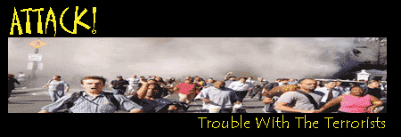

<html>


<!-- Mirrored from www.exitmundi.nl/terrorism.htm by HTTrack Website Copier/3.x [XR&CO'2014], Mon, 28 Jun 2021 00:55:23 GMT -->
<!-- Added by HTTrack --><meta http-equiv="content-type" content="text/html;charset=UTF-8" /><!-- /Added by HTTrack -->
<head>
<meta http-equiv="Content-Type" content="text/html; charset=windows-1252">
<meta name="GENERATOR" content="Microsoft FrontPage 4.0">
<meta name="ProgId" content="FrontPage.Editor.Document">
<title>The Terrorists Are Coming!</title>
</head>

<body bgcolor="#000000" text="#FFFFFF" link="#00FFFF">

  <p class="MsoNormal" style="LINE-HEIGHT: 12pt; tab-stops: -72.0pt -36.0pt" align="center"></p>
<blockquote>
  <blockquote>
  <p class="MsoNormal" style="line-height: 120%; tab-stops: -72.0pt -36.0pt" align="center"><span lang="EN-US" style="LETTER-SPACING: -0.15pt"><font face="MS Sans Serif"><font face="MS Sans Serif" color="#ff9900" size="4"><span style="mso-fareast-font-family: Times New Roman; mso-ansi-language: EN-US; mso-fareast-language: EN-US; mso-bidi-language: AR-SA; letter-spacing: -0.15pt" lang="EN-US">And
  then, there are those who frantically try to bring about the end of times
  themselves. To fulfill the Apocalypse out of some religious scripture, or
  simply, to get attention. But could a terrorist actually do it? Probably
  not. However, an enterprising terrorist could always try out one of the
  following
  ideas, bringing about a disaster of truly apocalyptic proportions</span></font><font face="MS Sans Serif" color="#ff9900" size="4">.</font><O:P></O:P>
  <br>
  </font></span></p>
  </blockquote>
  <div align="right">
    <table border="0" width="120" align="right" height="600">
      <tr>
        <td width="100%"><script type="text/javascript"><!--
google_ad_client = "pub-5046374505441754";
google_ad_width = 120;
google_ad_height = 600;
google_ad_format = "120x600_as";
google_ad_type = "text_image";
//2007-01-16: Indexbreed-grijzig, Grafieten hap
google_ad_channel = "9064366162+6276089418";
google_color_border = "CC0000";
google_color_bg = "CCCCCC";
google_color_link = "CC0000";
google_color_text = "333333";
google_color_url = "666666.html";
//--></script>
<script type="text/javascript"
  src="../pagead2.googlesyndication.com/pagead/f.txt">
</script></td>
      </tr>
    </table>
  </div><p><b><font face="MS Sans Serif" color="#FFFF00">1. Paint a pole<br>
  </font></b><font size="2" color="#FFFF00" face="MS Sans Serif">Difficulty:
  Hard<br>
  Needed: A big amount of dirt</font></p>
  <p class="MsoNormal"><font face="MS Sans Serif">Find a way to blacken the ice
  of one of the poles (the South pole is best). Cover it with dirt, soot or
  charcoal. Tainting it black with ordinary paint might take a little longer. A
  black pole doesn’t reflect sunlight but absorbs warmth -- and melts. The
  result: climate change, sea level rise, inundations and much annoyment for
  your enemies.<br>
  </font></p>
  <p><font face="MS Sans Serif" color="#FFFF00"><b>2. Design a disease</b><br>
  <font size="2">Difficulty: Very hard<br>
  Needed: A well-equipped laboratory, biology training</font></font></p>
  <p class="MsoNormal"><font face="MS Sans Serif">Build a biotech lab in some
  obscure country and hire some bad guy scientists who share your evil ideas.
  Now, piece together a version of Ebola that spreads through air. Design a new,
  upgraded version of the flu, or AIDS. Alter the camel pox virus so that it
  infects humans. You’ll find all the basics you need to know in the
  scientific journals and textbooks.</font></p>
  <p class="MsoNormal"><font face="MS Sans Serif">Now comes the tough part. The
  best way to spread your disease, is to infect yourself and visit the public
  transportation facilities of the cities you wish to attack. Cough, sneeze and
  snort at will. Touch every handle and doorknob you encounter with your
  virus-laden hands. You will see: it’s gonna be fun.</font></p>
  <p class="MsoNormal"><font face="MS Sans Serif"><font color="#FF9900">An even
  more evil way</font> to spread your doomsday disease around, is by letting
  animals do it for you. This takes a little extra research. Find out what
  animals carry your germ, preferably animals that don't go ill themselves. Most
  diseases have such a ‘carrier animal’: SARS, for example, gets carried
  around from human to human by common house cats.</font></p>
  <p class="MsoNormal"><font face="MS Sans Serif">A carrier animal will make
  your virus all the more successful, because it will be very hard to detect and
  even harder to contain the outbreak. Another upshot is that you survive the attack
  yourself. You might want to stick around to witness the misery you’re
  causing.<br>
  </font></p>
  <p><font face="MS Sans Serif" color="#FFFF00"><b>3. Detonate a disaster</b><br>
  <font size="2">Difficulty: Medium<br>
  Needed: An atomic bomb</font></font></p>
  <p class="MsoNormal"><font face="MS Sans Serif">Give a terrorist an atomic
  bomb or a huge amount of explosives, and he will immediately run off to blow
  up Washington DC. Dumb, of course. There might be better targets.</font></p>
  <blockquote>
  <p class="MsoNormal"><font face="MS Sans Serif">
  A well-chosen spot on the
  Western Arctic ice sheet might accelerate the melting of the pole. This should
  give you four to six meters of worldwide sea level rise, inundating many vital
  areas in Europe and the US.<br>
   A big enough boom in Yellowstone Park might awaken
  the now dormant <a href="volcano.html">supervolcano</a> under the park, turning
  half of the US into an ash-covered no man’ s land and bringing ice age to
  Europe.<br>
  </font><font face="MS Sans Serif"> Blowing up the already unstable volcanic island of La Palma could
  prompt a <a href="tsunami.html">mega-tsunami</a>, which would slosh cities like
  New York City, Boston and Miami to kingdom come.<br>
   A massive explosion on the
  seabed in the Gulf of Mexico could trigger a vast methane gas eruption,
  warming up the world’s climate and -- with some luck -- causing a huge
  firestorm over the US.</font></p>
  </blockquote>
  <p class="MsoNormal"><font face="MS Sans Serif">And the really good part is:
  you will find no guards on ocean floors, pole caps and volcanic islands.<br>
  </font></p>
  <p class="MsoNormal"><font face="MS Sans Serif" color="#FFFF00"><b>4. Smash
  the dollar</b><br>
  <font size="2">Difficulty: Medium<br>
  Needed: A large amount of money, a PhD in economy</font></font></p>
  <p class="MsoNormal"><font face="MS Sans Serif">Forget the Twin Towers, attack
  the US dollar instead. Become a stock broker, and infiltrate the stock
  markets. Now, organize a coordinated attack, Al Qaeda-style, on the US dollar.
  With some luck, you'll see the dollar die before the day is over, bankrupting
  the US and leaving it in economic shambles.</font></p>
  <p class="MsoNormal"><font face="MS Sans Serif">Know: every second, the US
  loans 18,000 dollars from abroad. The US national debt has passed the eight
  trillion dollar mark already. That's 8,000,000,000,000 dollar! The reason is
  that US citizens and the US government spend more money than they make. So, they're living on
  borrowed stuff.&nbsp;</font></p>
  <p class="MsoNormal"><font face="MS Sans Serif">This leaves the US dollar
  very, very vulnerable. One good punch, and the buck might fall over. So, sell
  a vast amount of dollars, preferably in a coordinated attack from multiple
  places. This should cause the dollar to take an evil plunge. Other stock
  brokers and banks should respond and sell their dollars, too. The dollar will
  plummet even further. Within days or even hours, dollar notes will have become
  worthless scraps of paper. Americans abroad will find they can no longer pay
  their bills. Oil producing countries will switch their currency from the
  dollar to the yen or the euro. Trade will grind to a halt. There may be riots,
  or wars, or both. You'll have fun!</font></p>
  <p class="MsoNormal"><font face="MS Sans Serif">In the end, the US will be
  alone in the world, a poor and bankrupt country with high unemployment, no
  fossil fuels and in need of almost everything. Things will never be the way
  they were. The yen or the euro will have replaced the dollar as the world's
  main currency - just like the dollar dethroned the English pound in the
  1920s.&nbsp;<br>
  </font></p>
  <p><font face="MS Sans Serif" color="#FFFF00"><b>5. Crush a current</b><br>
  <font size="2">Difficulty: Hard<br>
  Needed: Several ships, plenty of salt</font></font></p>
  <p class="MsoNormal"><font face="MS Sans Serif">It’s a bit of a long shot,
  but with some luck you may be able to plunge the Western world into an ice age.
  Now, wouldn’t you just love that?</font></p>
  <p class="MsoNormal"><font face="MS Sans Serif">The only thing you need to do, is disrupting the North Atlantic Current. This ocean current
  brings
  warmth from the tropics to Europe and the US. Without it, temperatures would
  be up to 10 degrees lower, disrupting agriculture and wreaking havoc with the
  economy of the civilized world. They would hate your guts for it, those
  westerners.</font></p>
  <p class="MsoNormal"><font face="MS Sans Serif">Already, the North Atlantic
  Current is weakening. And the best part is: some scientists believe that the
  current could break down relatively easy. Perhaps you may be able to kill the
  current yourself!</font></p>
  <p class="MsoNormal"><font face="MS Sans Serif"><font color="#FF9900">So, warm
  up the sea water</font> near Greenland with atomic bombs. Load some ships with
  salt and sink them in the Atlantic. This should make the sea water locally
  denser and heavier, putting a 'plug' on the current. Blowing up some
  well-chosen glaciers on or near the South Pole might do the trick, too.</font></p>
  <p class="MsoNormal"><font face="MS Sans Serif">We warn you: it is all very
  speculative. But failed crops, severe winters and millions of pissed-off
  westerners could be your reward.</font></p>
  <p><font face="MS Sans Serif"><br>
  <font color="#FFFF00"><b>6. Bring in the plagues</b><br>
  <font size="2">Difficulty: Easy<br>
  Needed: A library membership, plane tickets</font></font></font></p>
  <p class="MsoNormal"><font face="MS Sans Serif">If you’re a terrorist with a
  small budget, you could always try to unleash an agricultural plague of
  apocalyptic proportions.</font></p>
  <p class="MsoNormal"><font face="MS Sans Serif">Already, there are many pests
  around, causing billions of dollars of damage. Locusts,<span style="mso-spacerun: yes">&nbsp;
  </span>rabbits, parasites, fungi, worms and insects often become a plague when
  they’re introduced to a place where they're not supposed to be. The
  critters encounter no natural enemies, multiply wildly, and become a plague.
  That’s why Australia and New-Zealand have their rabbit problem and the US
  has its boll weavil.</font></p>
  <p class="MsoNormal"><font face="MS Sans Serif">So, study agricultural
  diseases. Track down some obscure Asian fungus or insect, and bring it over.
  Smuggle some sinister bird disease to the country you like to attack, and
  introduce it to its chicken farms. Bring in foot-and-mouth disease, or mad cow
  disease. Introduce weird weeds, exotic moths, sex-crazy rodents, hungry
  beetles and obscure insects. It might take a while before your Apocalypse
  kicks in. But boy, will it be some mess.</font></p>
  <p class="MsoNormal">&nbsp;</p>
  <p class="MsoNormal"><font face="MS Sans Serif"><font color="#FFFF00" size="4" face="MS Sans Serif">7.
  Shortcut a state</font><br>
  <font size="2" color="#FFFF00">Difficulty: Hard<br>
  Needed: Explosives, wire, a high-altitude airplane</font></font></p>
  <p class="MsoNormal"><font face="MS Sans Serif">Can't afford an atomic bomb?
  Don't panic. There's always 'the poor man's atomic bomb'. That's a device
  called an 'electromagnetic pulse weapon', or simply e-bomb.</font></p>
  <p class="MsoNormal"><font face="MS Sans Serif">E-bombs are quite easy to
  make. Just take a big 'sausage' of explosives, wrap coil around it, and put a
  magnetic field to the coil. Should you decide to detonate your e-bomb high up
  in the atmosphere, you should shortcut every piece of electric equipment below
  you. The bigger the bomb, the bigger the damage. It'll be fun.</font></p>
</blockquote>
  <div align="right">
    <table border="0" align="right">
      <tr>
        <td><a href="mailto:mke@xs4all.nl"></a></td>
        <td><a href="intro2.html"></a></td>
      </tr>
    </table>
  </div>
  <p>&nbsp;</p>
  <p>&nbsp;</p>
<div align="center">
    <center>
    <table border="0" width="728" height="90">
      <tr>
        <td width="100%"><script type="text/javascript"><!--
google_ad_client = "pub-5046374505441754";
google_ad_width = 728;
google_ad_height = 90;
google_ad_format = "728x90_as";
google_ad_type = "text_image";
//2007-01-16: rood grafiet leaderbord
google_ad_channel = "5833008090";
google_color_border = "CC0000";
google_color_bg = "CCCCCC";
google_color_link = "CC0000";
google_color_text = "333333";
google_color_url = "666666.html";
//--></script>
<script type="text/javascript"
  src="../pagead2.googlesyndication.com/pagead/f.txt">
</script>
      </tr>
    </table>
    </center>
  </div>


  <p><!-- End Webstats4U code -->
  </p>
  <p align="center"><font size="2">All texts Copyright © Exit Mundi / AW Bruna
  2000-2007.<br>
  You're not allowed to copy, edit, publish, print or make public any material
  from this website without written permission by Exit Mundi.</font></p>


<!-- Begin Nedstat Basic code -->
<!-- Title: Exit Mundi: Terrorism -->
<!-- URL: http://www.exitmundi.nl/terrorism.htm -->
<script language="JavaScript" type="text/javascript" src="../m1.nedstatbasic.net/basic.js">
</script>
<script language="JavaScript" type="text/javascript">
<!--
  nedstatbasic("ADeQIAoLBj0vP67M1BXnDhouKfhQ", 0);
// -->
</script>
<noscript><!-- End Nedstat Basic code -->


<!-- Mirrored from www.exitmundi.nl/terrorism.htm by HTTrack Website Copier/3.x [XR&CO'2014], Mon, 28 Jun 2021 00:55:23 GMT -->
</html>
